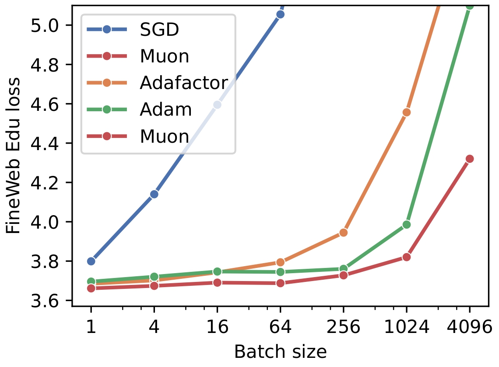

How to train LLMs with small batch sizes?
Everyone “knows” that to train large language models you need large batch sizes. Bigger batches mean less gradient noise, better training stability, lower final loss; so the bigger the batch, the better the model. It's a simple, causal story. But there's more than meets the eye. In this post, I will show results suggesting that what appears to be a “batch-size effect” is often a remembrance effect in the optimizer.
Most modern optimizers keep exponential moving averages (EMAs) while stepping through parameter space. Intuitively: the model's movement at the current point is blended with what it has seen before. A scalar EMA for a stream \(x_t\) looks like
Where \(0 \le \alpha \le 1\) sets how quickly the past is forgotten. Smaller \(\alpha\) means you trust the latest observation more, and larger \(\alpha\) means a longer remembrance of history. This "remembrance" can also be expressed in terms of half-life (the number of steps after which the effect of a particular observation halves its contribution to the update).
Adam uses these EMAs too. In its simplest form,
Where \(g_t\) is the gradient at time step \(t\), \(\beta_1\) controls the first moment, \(\beta_2\) controls the second moment.
What do the \(\beta\)s do?
Think of each \(\beta\) as a forgetting factor on the previous estimate. For a simple EMA \(y_t = \alpha y_{t-1} + (1 - \alpha) x_t\), the weight on past data decays geometrically; the half-life \(H\) (in steps) satisfies \(\alpha^H=1/2\). In Adam's second moment equation \(v_t=\beta_2 v_{t-1}+(1-\beta_2)g_t^2\), the analogous relation is \(\beta_2^H=1/2\). So \(\beta_2\) directly sets “how many steps” of history your optimizer remembers. Shorter half-life means updates which react more towards incoming data; longer half-life means smoother updates which prioritizes information accumulated in the past.

Figure: Effect of \(\beta\) on exponential decay / half-life in Adam.
So far, we've talked about half-life in terms of steps. But in large-scale language model training, a step isn't a fixed unit. Each step processes \(B \times T\) tokens, where \(B\) is the batch size and \(T\) is the sequence length. That means a half-life measured in “steps” is actually a half-life measured in tokens consumed. If we keep \(\beta_2\) fixed while changing the batch size \(B\), then we covertly change how long the optimizer “remembers” in terms of tokens. Smaller batch sizes mean fewer tokens per step, so the same \(\beta_2\) corresponds to a shorter effective half-life in token units. In other words, holding \(\beta_2\) fixed (as is convention) causes the optimizer to “forget faster”.
In our results below, we show that reframing and holding the half-life of \(\beta_2\) fixed allows for stable training, even down to batch size 1!

Figure: Fixing half-life instead of \(\beta_2\) helps!
Other amazing things about small batch sizes!

Figure: We sweep over learning rate, \(\beta_1\), and \(\beta_2\) across all batch sizes to find the most optimal configuration.
Heatmaps: learning rate does not scale as \(\sqrt{B}\); \(\beta_1\approx0.9\) is robust; and fixing the second moment half-life in tokens \(t_2\) is crucial. Across batch sizes, the optimal learning rate increases far more slowly than the conventional \(\sqrt{B}\) scaling rule. The standard choice \(\beta_1 = 0.9\) performs reliably across settings. Crucualliy, holding \(\beta_2\) fixed implicitly changes the effective half-life as batch size varies, which harms performance at small \(B\). Instead, fixing the token half-life \(t_2\) produces consistent behavior across batch sizes.

Figure: From the optimal configuration, we test the robustness of hyper parameters by independently changing each one. We observe that the robustness of hyper parameters improves as batch size decreases.
Small batches are more hyperparameter-robust. The sensitivity curves broaden dramatically as B→1. At B=1 you get a wide plateau of near-optimal settings over LR, \(\beta_1\) and the second moment half-life; at large B the loss rises quickly once you leave the tuned point. In practice this means fewer sweeps and easier hyper parameter tuning when you're running small batches.

Figure: As batch size decreases, we see that all optimizers tend to perform equivalently. Small batch sizes are more robust to optimizer design.
Simple optimizers work when batches are small. With small B, plain SGD (no momentum), Adafactor, Adam and Muon land at similar loss; as B grows, the gap between simple and sophisticated optimizers widens. The small-batch regime lets you drop optimizer state without giving up performance, which is great for memory-constrained runs.